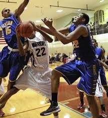

High School
I am from Chicago,IL where I graduated from the perspectives highschool of technology and was the first from my school to get a scholarship for basketball. In highschool I enjoyed building computers and working with photoshop and illustrator. FOr my final project I made a cartoon about a dino saving the world from the astroid tha destroyed them.
College
Once in college I played all four years at Emporia State University. I was the 13th in the nation in blocked shots my freshman year but was born with knees that were not built to run extended periods of time I graduated with a degree in health abnd human performance and started personal training other people who have dreams of making it to the NBA.

Recently
Now I am looking to find a career in Technology since it is something that I loved so much as a teen and can also provide a comfortable way of life. I hope to pursue a career in website design or software engineering. These courses have also taught me that I enjoy python and java. I don't have a link or picture for today.